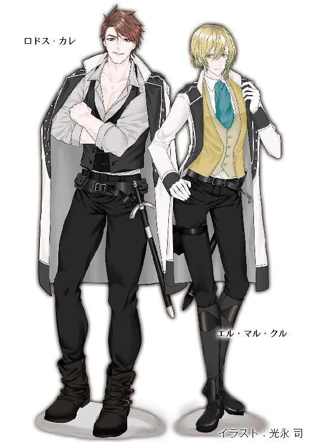

| 月戈伝 3巻 月KA伝シリーズ | |
| 御木 宏美 | |
| クリーク・アンド・リバー社 (2018) | |

月戈伝 ３巻
～月KA伝シリーズ３～
御木 宏美
本作品の全部または一部を無断で複製、転載、配信、送信したり、ホームページ上に転載したりすることを禁止します。また、本作品の内容を無断で改変、改ざん等を行うことも禁止します。
本作品購入時にご承諾いただいた規約により、有償・無償にかかわらず本作品を第三者に譲渡することはできません。
本作品を示すサムネイルなどのイメージ画像は、再ダウンロード時に予告なく変更される場合があります。
本作品は縦書きでレイアウトされています。
また、ご覧になるリーディングシステムにより、表示の差が認められることがあります。
月戈伝
五章
１
謹慎から解放された翌日、アレグリナはギルネと枢密院の許可を得て、イスハク・パシャを聖宮へ呼び出した。同じく自宅謹慎が解けたエル・マルにも同席を求めた。
午後、アレグリナは護衛のリプシマだけを伴い、人の出入りが多い聖宮の執務室や謁見室を離れて、アスランと会ったあの東屋で二人と向かい合った。
「突然呼び立てて、ごめんなさい」
「お気になされず。むしろわたくしのほうがお詫びに伺わねばと思っておりましたゆえ。このたびのことでは、聖下に大層なご不快をおかけし、まことに申し訳ないしだい」イスハク・パシャはベンチから降りて、石床に跪き、深く頭をさげる。「どのようなご処分なりともご随意に」
アレグリナは微苦笑を浮かべた。
「いいの。頭を上げて、座って」
「聖下」
豪商は顔を上げる。アレグリナは微笑ってみせた。
「気にしないで。あなたが処分されなくてよかった」少女は隣にも目を向けた。「エル・マルもね」
青年は苦笑を浮かべ、黙って頭を下げた。アレグリナは頷く。
イスハク・パシャは一礼し、ベンチに戻った。
「ギルネ殿にお聞きしましたが、アスラン殿下はいまだ見つからずとか」
「ええ。ランドック山脈のほうへ向かったことはわかっているけど、途中で消えてしまったそうよ。各地に検問所を設けて、巡礼者や隊商を徹底的に調べているから、身動きがとれずどこかに潜伏しているのかも」
「それはどうでしょうな。山岳地のほうに向かわれたのは、バイロンへお戻りになられるためではないかと。あのかたは反戦を掲げておられた。戦をすれば大勢の民が死傷すると。しかしレイクトラとの和平工作が失敗に終わった以上、戦を回避するために残された道は自国の進軍を止めるしか」
エル・マルとリプシマが顔を見合わせる。アレグリナは憮然とした表情で肩をすくめた。
「どうでもいいわ、あんな奴。どのみちもうすぐ戦は始まる。首尾よく彼が進軍を止めてくれたら、それもよし。逆にたとえ彼が我が軍の作戦に気づいて派遣部隊の司令官に伝えたところで、今さらバイロンにどれだけの手が打てるっていうの？」
「たしかにそのとおりではございますな」
パシャはふくよかな首を縦に折る。
アレグリナは好々爺とした顔を見つめた。
「......一つ訊いてもいい？」
「なんでございましょう？」
「見つかれば処罰されるかもしれないとわかっていて、どうして彼を連れてきたの？」
パシャはほのかに笑った。
「聖下とナヴァール公の一件では十一使徒家に肩入れしてまいりましたが、そもそも傭兵や護衛は雇い主を問わぬもの。わたくしはそれらを商う口入れ屋でございます。もちろん契約の内容や、その過程で見聞きし得た情報を敵対する者に売ることはいたしませんが、商いに対して正当な対価をお支払いいただけるのであれば、口入れ屋にとっては、いかなる国のいかなる人物であろうと、依頼人は依頼人であり、仕事は仕事。それ以上でも、それ以下でもございません」
「なるほどね......」
アレグリナは視線を落とした。
「いかがなされました？」
少女は首を横に振る。そして失笑を浮かべた。
「そういうふうにはっきりと乾いた仕組みを口にする人は、逆に信用できるわ」
つられるようにパシャも笑んだ。
「乾いた、でございますか──なるほど、たしかにそうでございますな。長年その中で暮らしてきた者は、慣れて感じなくなってしまいましたが」
軽い口調で笑う。
アレグリナは目を上げ、改めて福々しい顔を見つめた。
一見、善良そうな老人──しかしその正体は、はした金で子供を買い上げ、武芸や馬術を仕込み、兵士に育て上げて戦場に送り込む、死の商人。
アレグリナはドレスの胸元を握り締めた。
「......人を死地に送り込んで儲けることに対して、良心の呵責を覚えたことは......？」
「聖下」
エル・マルが驚く。付き添っているリプシマは視線を下げた。
しかし問われた豪商は驚きも動揺もせずアレグリナを見つめる。
「バイロンとの件で、惑われておいでですかな？」
アレグリナは顔をそらした。
「......いえ」
唇を噛み締める。
パシャは穏やかに言った。
「お隠しになる必要はございません。それは恥ではない」
「............」
「聖下はまだお若い。ましてやいきなり一国を背負うお立場となられた。戦に対して惑いや恐れを覚えられるのは当然です」
「でも」アレグリナは老人へ視線を戻した。「ナヴァールは惑っていなかったし、恐れてもいなかった──少なくても私にはそう見えたわ。彼は最強の武将であり、聡明な王であり、廷臣の前ではなにものにも怯まず、わずかな惑いもみせず」
パシャはじっと目を見つめて話を聞いている。アレグリナは視線を落とした。
「......ナヴァールは、バイロンの民が清貧を尊び、無益な戦は好まないことを知っていたはずよ。飢える理由も。でも彼は隣国が飢饉に襲われても援助は行わなかった。食料が尽きれば道は三つしかない。国を捨てて難民となるか、そのまま死を待つか、戦に討って出るか。彼はバイロン軍を掌握している司令官の性格も把握していたはず。サーマルなら絶対、侵攻して来るって。もし本当にナヴァールがそこまで読んでいて、それでも食料を出さなかったのだとしたら、彼は進んで戦を呼び込もうとしていたことになるわ」
パシャは頷く。
「野望をお持ちだったからです」
「ダリウスへの侵攻？」
「おそらく最終目標はそうであったのでしょう。そのためにはまず北の脅威を取り払う必要があります。侵攻中に背後から攻められ、挟み撃ちにされてはたまりませんからな。しかるのちにソロイやシャーゴを手中に収めてダリウスに拮抗する大国の建設に乗り出す。しかし一国を攻め落とそうと派兵を行えば莫大な費用がかかります。戦は攻めるより護るほうが、兵力も費用も数分の一ですむ。バイロンの飢饉による侵攻は、ナヴァール公にとっては願ってもない好機だったでしょう」
アレグリナはシニカルに笑った。
「やはりね。でも、それが事実かどうかは今となってはどうでもいいわ。重要なのは、彼が戦を厭っていなかったこと......」
「聖下」
アレグリナは胸元を握り締め、唇を噛み締めた。
「......割り切れたらいいと思うわ......。でもまた死傷者が出る......」
「............」
アレグリナは自嘲を浮かべた。
「他人の苦労に対して悲しみや憐れみの気持ちは湧かない。見知らぬ人がどれだけ傷つこうと、ましてや他国の人間がどうなろうと、それに対しては痛みなんてかけらも感じない。そんなにできた人間じゃないわ。ただ、またあの苦しみを自分が背負う......。今度は何万、何十万という人間を殺した苦しみを......」
エル・マルの表情が歪んだ。リプシマは憂いを深める。
「聖下......」
気遣わしげな口調に対してアレグリナは激しく首を振った。
「かといって、今さらお母様のような慈悲深い人間にはなれない。なる気もない。ナヴァールのような領土拡大の野心はかけらもないけど、私も要領の悪いバイロンを援助する気にはなれない。あいつが言った助け合いなんて美徳は、益になる人間との間で行うものよ。自分が下した決断に後悔はしていない。ただ......」
ドレスから手を放し、両手の中へ顔を伏せる。途切れた言葉をパシャが続けた。
「罪悪感を振り払えない」
顔を覆ったまま少女は頷く。
パシャ、エル・マル、リプシマは、アレグリナが女官や侍従を遠ざけ、この東屋で四人だけでの面会を望んだ理由を悟った。
エル・マルはやるせなさを浮かべて顔をそらした。リプシマは視線を落とす。
神王といっても、まだ十七歳。ましてや女。強がってみせてはいても、怯えるのは当然。
「そうですな」二人の憂いを代弁するようにパシャが静かに言った。「されど罪悪感や恐怖心を抱かぬ人間などおりますまい。おそらくはナヴァール公とて、惑いや不安をお感じになられて、眠れぬ夜を過ごされたこともおありだったでしょう。人は剣や鍋のような物ではございません。人には心がある。心がある以上、王も、あまたの戦場を生き抜いた傭兵でも、人を傷つければ恐怖心を抱きます。それは人である以上、いたしかたないこと」
アレグリナはゆっくりと面を上げた。
揺れ動く双眸を見つめ、パシャは続けた。
「お辛いでしょうが、国のため、他人のために悩むことこそ、神王聖下のお努めでございます」
「............」
商人は腰かけから石床に下り、アレグリナの前に跪いた。
「ただ美しいだけの人形として生きられたらお幸せでしょう。その強さと聡明さが逆にお苦しみを深める。ともに罪を背負い、苦しみを分かち合って歩んでくれる男性がおそばにおられたら」
アレグリナは唇を噛んだ。
少女を見上げたまま、膝の上で握り締められた手に、パシャはそっと手を添え、言葉を続けた。
「されど、シャーは分不相応の人間を配置なさらない。アレグリナ様は一国を背負う度量をお持ちのおかたでございます」
「パシャ......」
揺れる至宝の色の瞳に商人は頷いてみせる。
「シャーは我ら人間にのみ、畑を作ったり、凍えぬよう火を熾して暖をとる知恵をお与えになられた。知恵がある以上、聖下のおっしゃるとおり、一人一人が生きるすべを自ら考え、行動を起こし、己の力で生き抜くことが、シャーの教えではないかと思います。一方のバイロンでは、万民が互いに助け合うことこそ、シャーの教えと説いております。かの国では貧富の差はほとんどありません。万人が貧しい。商人には儲けに対して重い税が課せられる。逆に老人や病人など働けぬ者は手厚く保護されております。万民が飢えることのない国、弱き者に対して助け合いの心厚き国を目指し、皮肉にも全滅の危機に陥っている。これはいかがいたしたことでしょう？」
「......そもそもの食糧生産量が少ないからでしょ。バイロンは聖典の教えを厳格に守って、大規模な農地開拓を行わなかった」
「最大の理由はそうでございますな。ですが先ほど聖下がおっしゃられた人の世の乾いた仕組みから鑑みれば、もう一つ要因が考えられます」
「もう一つ......？」
「はい」
どういうわけかパシャはにっこり笑った。
「その答えはすでに聖下もおっしゃっておられますがな」
「え......？」
老人はいたずらっぽく笑う。
「聖典にも書かれていることです。聖下もよくお読みになられる箇所のはずですが」
アレグリナは首を傾げた。パシャは背後に座るエル・マルに肩越しに顔を向ける。
青年は微苦笑を浮かべながら聖典の一説を唱えた。
「神は三つの身分を作りたもうた。祈る人、戦う人、耕す人」
パシャは頷く。アレグリナはますます首を傾げた。
「それが？」
「戦を否定し、助け合いを尊ぶなら、なぜシャーは戦う人をお入れになられたのでしょうな。祈る人、耕す人、商う人でなければならないはず」
アレグリナは軽く目を見開いた。
「......そうね。考えたこともなかったけど」
商人は軽く笑みを浮かべた。
「これはこの悪党のこじつけでございますがな──剣や矢で殺し合うだけが戦ではございません。商いとはこれ勝負にございます。お役人は国ある限り給金が保証されておりますが、商人は才覚がなければのたれ死ぬだけです。いうなれば商人こそ戦う者でございましょう。その乾いた心の悪人どもの間には、聖典をもじったある理が伝わっておりましてな。二─六─二の慣わしと申しますが、ご存知ですかな？」
アレグリナは首を横に振る。
「それはなに？」
「シャーは三種類の人間を作りたもうた。稼ぐ人、安い人、余る人」
アレグリナはしばし考えた。
「......富を蓄える人、安い賃金で人に使われる人、仕事にあり就けない人？」
「さようでございます」
「名言だと思うけど、人命や人権の尊重を口にしていた誰かさんが聞いたら、それこそ差別と格差の助長だって、あからさまに非難しそうね」
パシャは朗らかに笑った。
「ですからバイロンは飢饉に対応できなかったのです。商人に重い税を課さず、弱者の救済は最低限に留めおき、才能ある者が豊かになれる社会を作れば、災難が降りかかっても、その二割の豊かな民と、そこで使われておる六割の人間の半数は生き延びられましょう。かの国はそうせず、弱者に糧を分け与え続けた。その結果、商才ある人間はどんどん国を捨て、レイクトラへ、ダリウスへと移り住みました。ロスタムで毛皮商を営んでいるボードも、もとはバイロンの人間です。弱き者の保護などというものは、そもそも稼ぐ人間があり、その者たちが税を納めて初めてなりたつもの。働けど働けど税を吸い上げられる国と、働いた分だけ財を蓄えられる国があれば、才能ある者が後者に移り住むのは当然でございましょう。バイロンは人間の欲望の本質を考えず、稼げる逸材と蓄えねばならぬ財を失ったばかりか、生産能力の欠しい食い扶持を増やし続けたのです。我々商人からみれば、これほど愚かな舵取りはございません」
「............」
温かい手がアレグリナの手を、両手でそっと包み込んだ。
「この世には、死以外に、全員に正しく公平なことなどありえません。誰かの幸せは、誰かの不幸。大なり小なり、人は他者を傷つけ、苦しめて生きているのです。それが一個人のためであるか、国家のためであるか、それだけの違いです」
「............」
「たしかにこたびの戦は聖下にはお辛いご決断でしょう。されど、そのご決断により、生涯、なんの苦労もなく生きられる民がいる。アレグリナ様がお考えにならねばならないことは、このレイクトラの民の幸せです」
「......でも......」
いまだ不安の気配は消えず揺れる明翠色の瞳に、パシャは頷く。
「お気持ちはわかります。しかし今申したように、バイロンやお母上リレ様のような過大な慈悲は、逆に自滅を招くことも頭の隅に残して置かれたほうがよろしいでしょう」
「............」
「善きことだけを行えば心安らかにはいられます。しかし必ずしも善き道が良い結果に繋がるとは限りません。悪しき道が最良の選択であることもある」商人は少女の瞳をひたと見据えた「善き考えにつけ悪しき考えにつけ、それにがんじがらめに縛られてしまえば、最良の結果を導けない。統領たる者は、善と悪、両方の決断を下せる度量が必要です。畏れながら、リレ様にはそのお覚悟がなかった。そのために逆に大勢の民を苦しめてしまわれた」
「............」
「聖下が行われる悪行は、己が私腹を肥やさんがために人を商うわたくしとは違います。法や教えでは悪しき行いであっても、民のためとなれば、それは善です」
「パシャ......」
「ご自身をお信じなされませ。それだけが頂点に立つ者の救いです」
アレグリナはふくよかで温厚そうな顔を見つめた。
老人もまっすぐに見返す。
アレグリナの顔から張りつめた雰囲気が少しだけ消えた。
少女はゆっくりと首を縦に折った。
「......うん......」
息をつめて見守っていたエル・マルはほっと肩の力を抜いた。アレグリナの傍らに立つリプシマが、かたじけない、とパシャに目礼する。
豪商は微笑み、石床から腰を上げた。アレグリナが座ったままその顔を見上げる。
「あなたに諭してもらうのは二度目ね。忙しいでしょうに、呼び立ててごめんなさい。でもあなたの言葉は神官や教師の教えよりしっくりくるの」
イスハク・パシャは朗らかに笑った。
「それはわたくしが悪人だからでございますよ。悪の誘いは蜜の味と申します」
アレグリナは視線を落とし、ひっそりと微苦笑を浮かべた。
「完全な善人がいないように、完全な悪人もいないわ」再び商人を見上げる。「家族はダリウスに残して、あなただけロスタムに住居を戻したそうね」
「はい。四年前に妻を亡くしたのを期に、店は息子たちに譲りました。今は気ままな隠居生活でございます。ですからこんな年寄りの話でよろしければ、いつでも御前に参じます」
「頼むわ」
笑顔のパシャに、アレグリナは深く頷く。
表裏がある人間だからこそ信じられる。
少女は口に出さなかったが、思いを察したエル・マルとリプシマが微苦笑をこぼす。同時に二人は少女がわずかでも慰めを得られた様子に安堵した。
その時。
「アレグリナ様！ 聖下、どちらに!?」
木立の向こうで呼ばう声がした。
「早くお捜しして！」
ガラジェの声だった。ひどく慌てている。
「聖下！」
「どちらにおいででございますか!?」
侍従か神王騎士団らしき男たちがあちらこちらで声を張りあげる。
「ここよ」
アレグリナは大きな声で答えた。
「聖下!?」
返事を聞きつけて石畳を靴音が駆けてきた。
茂みの向こうから、ドレスのスカートをたくし上げたガラジェが髪を乱して飛び出して来た。
「聖下！」
「なあに？ 騒々しい」
「今、枢密院に呼ばれました！ これが読めるか、と」
ガラジェは手に持っていた白い封筒を差し出した。
「なあに？」
なにげなく受け取ったアレグリナはそこに書かれていた文字に目をやり──
「......!?」
黒いインクで書かれてある宛名はこちらの世界の文字で、ルナ。
アレグリナは急いで封筒を開けた。
「これは......！」
見覚えのある紙が出てきた。
震える指で裏返す。
「......！」
そこには異世界の文字が並んでいた。
『バイロンが、ランドック山脈の下をレイクトラまで貫くトンネルを見つけ、軍隊を送り込むべく、囚人を使って補修させている』
２
すでに閣議の間に十一使徒家の当主をはじめ大法官や大元帥など、枢密院の顧問官が揃っていた。
「この手紙はどこから!?」
やって来たアレグリナが訊ねた。
レザックがテーブルの上に広げた国土地図の一点を指差す。
「このあたりの村からです」
ランドック山脈の麓で、国土の北東の端近く。付近一帯はミュスタイアと呼ばれている。
「農民が領都の代官所に持ち込み、そこから駅逓にてわたくし宛てに送られてきました。なお、手紙と一緒にこれが」
小さなものが地図の上にことりと音を立てて置かれる。
銀の指輪だった。
弓と矢が刻んである。レザック家の紋章だ。
当主は硬い声で続ける。
「わたくしがオルターにやったものです」
表情も硬い。
アレグリナは封筒を握り締めた。
「......なぜ......」
呆然と呟く。
ダリウスの十二宮に向かったはずのオルターが、なぜレイクトラに。
クルが厳しい目つきでアレグリナに付き従ってきたエル・マルに質す。
「オルターはまことダリウスへ出国したのか？」
「はい、たしかに。シャーゴに近い西のキーリッジの国境から出国しました」
答えるエル・マルも驚きを隠せない。
「では、南のダリウスに向かったはずのオルターが、どうしてまったく逆方向であるミュスタイアにいるのだ？」
「しかもバイロンがランドック山脈の下を貫く坑道を見つけたなど」
「それは......」
エル・マルは困惑を深める。
アレグリナは鋭く叫んだ。
「オルター以外の誰が書けるって言うの!? 英語の手紙を！」
ガラジェとリプシマが頷く。
ギルネが冷えた口調で言った。
「罠ということも考えられる」
「罠!?」
アレグリナは声を荒げた。ギルネは冷淡な口調で答える。
「バイロンの大使館はまだ閉鎖されていません。おそらくバイロンは大使館員以外にも大勢の諜報者を我が国内に潜ませているはず。彼らがオルターに目をつけ、接触し、ありもしない話を書かせて、我が国をかく乱しようとしている可能性も考えられます」
十一使徒家の当主を含めて枢密顧問官たちがざわめく。
「どうしてオルターがバイロンに味方するのよ！ ありえないわ！」
「あやつは一度我らを裏切った。報酬か女に目がくらんだのかもしれません」
アレグリナは秀麗な顔を睨みつけた。
「オルターはそんな人じゃないわ」
枢密顧問官たちは顔を見合わせた。
「では聖下は坑道が実在すると申されますか」
一人がアレグリナに問う。
「ありえない！」大法官が力強く否定した。「岩肌を削って一山を越える街道を作るだけでも何年もかかる難工事だ。いくつもの山嶺が重なったランドック山脈の下をバイロンからレイクトラまで南北に貫くとなると二百キロを越す。そんな坑道など、掘れるわけがない」
「できるわ」アレグリナはきっぱりと答えた。「私が育った世界なら」
顧問官たちは再び顔を見合わせ、ざわめく。
セヴンが口を開いた。
「畏れながら聖下、ここは聖下がお育ちになられた世界ではございません」
アレグリナはそれには答えず、エル・マルと末席に控えるイスハク・パシャに視線を向けた。
「オルターが言ってたけど、ダリウスに古代文明のものかもしれない遺跡があるそうね。見たことある？」
「ああ──ええ、あります」
エル・マルが答えた。
「どんなの？」
「どんなのと言われましても......。大半は石や岩のかけらが広い範囲に散らばっているだけで、もとの形がいかようであったかはさっぱりわかりません。ただこちらのものではない文字が彫られた石碑はいくつか見たことがあります」
「石碑？」
「はい。それから城ほどの大きさで窓や出入口がまったくない巨大な石積みなど。その地に住む者の話では、石積みのそばに長くいると、人間も家畜も口から泡を噴きながら死んでしまうとの伝承があり、近づく者は皆無だとか。私も話を聞いて街道から眺めただけですが、かなりの距離があったにも関わらず、草原のはるか彼方に巨大な石積みが一つだけぽつんとそびえ立つ光景は異様でした。まるで置き忘れられた石棺のような......」
言って、エル・マルはパシャを見る。パシャは頷き、続けた。
「これは傭兵たちの間に伝えられている話で、わたくしはじかに見たことはございませんが、トスカナの西南端、内海沿いの砂漠地帯には、鳥の巣箱のような建物が建ち並ぶ大きな街の遺跡がいくつかあるそうです。さらにある街の近くには、誰がなんのために作ったのかわからない海の道というものがあり、陸から沖へ向かって、とてつもなく幅広く平坦な道が、先端が見えないほどはるか先まで、まっすぐに伸びているとか」
神官でもあるマンが頷く。
「それはシャーが月にお帰りになる際にお使いになられる道ではないかと言われております」
ビオスが口を開いた。
「遺跡ならトスカナ中にございます」
「バイロンにも？」
「はい」
ほかの柄臣たちも首を縦に振る。
「このレイクトラでも、土を掘れば、いたるところで石のかけらや、燃すと真っ黒な煙が立ち昇る鮮やかな色の軽石が見つかります」
「そう......」アレグリナは視線を落とした。「長くいると泡を吹いて死んでしまう巨大な石棺に、黒い煙が立つ色つきの軽石、ね......」
「聖下？」
「それがいかがなされました」
アレグリナは顔を上げた。
「聖典の中の創世記によると、かつてこの地上には、とてつもなく豊かで快適な世界が存在したそうね」
「そう記されておりますな」
「それが事実で、かつてここに私が育った世界と同水準の科学文明があったとしたら、ランドック山脈を南北に貫く坑道は簡単に造れるわ」
沈黙が落ちた。
十一使徒家の当主たちと大法官、大元帥は互いにちらちらと目を見合わせ合った。その表情はまだ半信半疑だ。特に大法官と大元帥は否定の色が濃い。
腕組みをしたギルネがちらりとエル・マルの顔を見た。エル・マルも同じように無言で見返す。そこにガラジェとリプシマの視線が加わる。
四人は知っていた。アレグリナの育った世界がいかようのものか。
ギルネとエル・マルが動いた。枢密顧問官たちをおいて二人は厳しい表情で地図を見つめているアレグリナに歩み寄り、その左右に並んだ。
アレグリナがギルネに視線を向ける。
「ソルトレイクシティから牧場まで、オルターの運転する車でロッキー山中のハイウェイを走っている時にいくつかトンネルをくぐったけど、ギルネ、憶えてる？」
「ええ」
エル・マルも首を縦に振る。
「あんな感じだと思うわ。どんな文明でも街と街を繋ぐ道路や鉄道が必要だもの」
「手紙が差し出された村はここです」
ギルネが改めて指差した。アレグリナは眉をひそめる。
「山脈の幅がここだけ少し狭いわ」
「しかしこのあたりは特に高い頂がいくつも重なっていて、勾配も急です」
エル・マルが言う。アレグリナは首を横に振った。
「山の下を掘り進むのなら、高さや勾配は関係ないわ。重要なのは地質と距離よ。機械を使っても掘る距離は短いほうがいいに決まっているわ」
「バイロンのこの位置から掘り進めれば、山嶺三つでレイクトラに出る」
ギルネが地図上に指を走らせた。
「一番の問題は」ギルネはアレグリナとエル・マルに視線を向けた。「まこと坑道がここにあった場合、スフォルツォ川の東に出ることだ」
アレグリナはゆっくりと居並ぶ枢密顧問官を見回した。
ランドック山脈に端を発する大河スフォルツォは聖都防衛の要である。ロスタムは川の東にあり、バイロンとレイクトラを結ぶ三本の街道のうち、荷車を通せるジナールは川の西側。バイロンが侵攻して来ても、ロスタムを落とすには必ずスフォルツォ川を越えねばならない。泳いでは渡れない広い川で、橋は一ヵ所のみ。防衛のために歴代の神王と国を動かしてきた十一使徒家は、この重要な川にほかに橋をかけなかった。
東側に出るということはその川が突破されるということだ。
半信半疑だった枢密顧問官たちの表情がここにきて引き締まった。
「ただちに部隊を派遣しよう」
カラマンが硬い声で言った。
手紙の真偽を議論している場合ではなかった。
「土木庁と地方庁に大至急坑道のありかを探索させねば」
「ジナール、フランコ、ロカルノに向かった部隊にも急使を！」
にわかに慌しくなる。
アレグリナは手紙を握り締め、唇を噛み締めた。
３
ただちにすべての幕僚と聖都に残る六師団の将が閣議の間に招集され、アレグリナと枢密院の出席のもと、軍議が開かれた。
「バイロン軍は都を出発したのち、予定どおり全軍がジナールの道に向かったと報告があったばかりです」
将校の一人が、大テーブルの横に掲げたレイクトラとバイロン、二枚の国土地図を示しながら報告を行う。
「山岳地に入る手前で二手に分かれたのであるまいか」
集まった枢密顧問官や幕僚たちの表情はいずれも硬く険しい。
「ではジナールの道をやってくるのは囮で、坑道を主力部隊と考えるべきと申すか」
「おそらくは」
テーブルを囲む三十人あまりの人間が地図に目をやりながら、緊迫した声でやり取りをかわす。
「どのぐらいを坑道にまわすか」
「そちらを主力とするなら八万か、あるいは九万」
幕僚たちは腕を組み唸る。
元帥の一人が難しい表情で口を開いた。
「御前でこのようなことを申すのは臣下にあるまじき非礼だと重々承知つかまつっているが、私にはそのような坑道を掘れるとはいまだに信じられぬ」
ギルネが冷然と答えた。
「我らは実際にあちらでそれを目にし、行き来もしました」
「それは異世界での話だ」
「たしかに。しかし創世記に登場する伝説の世界や遺跡のことは閣下もご存知のはず」
「............」
向こうを知る者として臨時に出席と発言を認められたエル・マルもギルネの意見に首を縦に振る。
「失礼ながら、存在の有無を議論している猶予はないかと」
元帥は黙り込んだ。エル・マルは続ける。
「オルターの手紙には補修させているとあります。皆さんもご承知のとおり、ランドック山脈は岩でできている。坑道が、聖下がお考えになられているようなものであれば、硬い岩盤をくりぬいた山脈内部はそのままの状態で残っている可能性が高い。それが交易路として作られたものならば荷馬車の通行も可能なはずです。しかしその入口や、山脈と山脈の間の谷や川をまたぐ橋や街道などは、各地の遺跡の状況と照らし合わせるに、風雪と永の年月ですでに崩れ去ったと考えたほうが妥当でしょう」
「となると大型の武器は運べないな」
「やって来るのは歩兵と騎兵が中心ということか」
「おそらくは」
幕僚たちは難しい顔つきで並んだ二枚の地図を見つめる。地図上には坑道を表す二本の赤い線が、ランドック山脈を南北に貫いて書き込んである。
幕僚の一人が椅子からに腰を上げて地図に歩み寄り、赤い線を指差しながら、
「この仮定位置がおおよそ正しいとして、ロスタムからここミュスタイアまで、行軍にかかる日数は？」
「夜明けと同時に歩き始め、日没までほぼ休みなしの強行軍を行えば、およそ三日です」
師団を指揮する将の一人が答えた。
「バイロン側はどうだ？ 山岳地の手前で二手に分かれたとして、坑道の入口までどのくらいで到着する？」
「山脈のふもとを東進すれば、我が軍と同じ条件で、分団からおよそ十日でしょうか」
「坑道内部は？」
「それはお話のように谷をはさんでいくつかに別れているのか、あるいはランドック山脈全体の下を一気に貫いているのか、構造がわかりませんので正確な予測できませんが、平坦な一本道を進むだけなら三日で抜けられます」
答えを聞いて、枢密院と幕僚たちは険しい表情で眉の間に深い溝を刻む。
「最短で十三日か......」
リレ在りし時代に大元帥を務めたカラマンが幕僚に訊ねる。
「今日現在のバイロン軍の予想位置は？」
「ジナールのほうは六日前に山岳地に入ったと思われる」
「ならば坑道のほうは、残された時間は七日ということになるな」
全員の間に重苦しい沈黙が落ちた。
同じく幕僚の一員だったカレが重い声音で一同に言った。
「今から農民を徴集してもとても間に合わん」
顧問官と幕僚は頷く。
「残っている六師団だけで防ぐほかない」
その師団を率いる六人の将たちが姿勢を正し答えた。
「すでに出撃の準備を進めております」
大元帥が頷き、命じる。
「坑道の捜索の結果を待っている猶予はない。国境警備の第一師団をのぞく、第三、五、七、九、十二師団は準備を終えた中隊から随時出発せよ。全軍、遅くとも今夜中だ。なお出撃の理由を兵に教える必要はない」
「はっ！」
六人の師団長は敬礼で答える。副官たちがそれぞれの師団に命令しに駆け出していった。
残った師団長と幕僚たちはさらに作戦を話し合う。
アレグリナは唇を噛み締めた。
豊かな国土を荒らしたくないと、常設軍だけでの戦闘を命じたことが裏目に出た。
進軍してくるバイロンの予想兵力は九万。迎え撃つレイクトラはわずかその十分の一。山岳地の作戦は地の利と常識外れの戦術を用いるからこそ、少数での対峙が可能だった。
アレグリナはここでも付き添っているリプシマがかつて言った言葉を思い出した──極論だが、戦は倍の兵力を投入すれば勝てる。
倍どころか十倍。レイクトラの圧倒的不利は言うまでもない。
アレグリナ以上に状況がわかっているであろう柄臣や幕僚の表情はさらに険しい。絶対的存在である神王のご前なので誰もあからさまにはそれを口にしないが、奇抜な戦略を用いたアレグリナと十一使徒家への不信感と怒りが静かに渦を巻いている。
それを受ける当主らとギルネ、エル・マル、リプシマの表情もまた厳しかった。
４
慌しく出撃の準備が進められた。
今度は聖宮下の環状路に全軍が整列しての勇壮な出陣式もなかった。装備を整えた部隊から順次、各兵営や駐屯地から出征していく。
アレグリナの執務室に、衛兵隊の士官服を身につけたエル・マルが出撃の挨拶に訪れた。自ら志願し、戦時特例で兵站将校として急遽、軍に籍を入れた。
「エル・マル......」
アレグリナは唇を震わせた。
「そんな顔をなさらないでください」
生きて戻れない可能性のほうがはるかに高い激戦場へ向かうというのに、跪いた青年は清々しい笑みを浮かべた。
ファチャは泣いていた。シナーンの表情は哀しみに沈んでいる。ガラジェとリプシマの顔も歪んでいた。
「............」
なんと言えばいいのか。アレグリナは唇を噛み締める。それを見てエル・マルはほのかに微笑った。
「オルターと約束しました。どんなことがあっても聖下をお護りする、と」
「エル・マル......」
揺れる眼差しに、青年は笑みを深める。
「あいつは聖下を好きでした。けれど父たちに、おまえを聖夫にするわけにはいかぬと言われて、やむなく身を退いたんです」
ガラジェとリプシマがはっと息を呑んだ。
「エル・マル、それは......！」
傍らのギルネが眉根に深い溝を刻んで目を眇める。
アレグリナは呆然と呟いた。
「なに、それ......」
エル・マルは厳しい咎めの視線をあえて無視し、静かに言を続けた。
「あの時──オルターと最後にお会いになられた時です。聖リドゥ宮に向かう道程で賭けをしました。聖下が一緒においでになるかどうか。私はおみえになるほうに賭けましたが、オルターは来ないと......」
「............」
「あいつはこう言ってました。あいつは──聖下のことです。聖下はお姫様になりたくてこちらに戻ってきた。ようやく手に入れたその暮らしを捨てるはずがない」
「............」
「そしてこう──俺と逃げても幸せにはなれない。俺にはあいつの望む生活は与えてやれない。逆に苦労させるだけだ。でも──」
「でも......？」
呟くように小さく問うアレグリナに、エル・マルは頷いた。
「でも、もし来てくれたら、二人だけで暮らす。そして、遠い先でいいからいつか、俺の子供を産んでもらえたら」
「......!?」
「その夢が叶うのなら、俺はなにもいらない。彼女と子供を護って生きていく......」
「............」
アレグリナはドレスの胸元を握り締めた。
エル・マルは微笑む。
「あいつは本当に聖下に惚れていました。これまでに出会ったどの女より美人で、鼻っ柱の強いところが可愛い、と。同時に強く気にしていた。神王となられる聖下の未来を」
「............」
「なにが起こっても、俺にはもうどうしてやることもできないから、代わりにおまえたちがずっと見守ってやってくれ、と」青年は居住まいを正し、一礼した。「内緒にしておけと言われましたが、お会いできるのはこれが最後かもしれませんので」
「エル・マル......」
青年はきっぱりと答えた。
「これは私の役目です」
「............」
腰を上げ、エル・マルはアレグリナの傍らに付き添うギルネとガラジェとリプシマに目を向けた。
「聖下を頼む」
三人は無言で首を縦に振った。
「では」
エル・マルはきびすを返した。
「エル・マル！」
思わずシナーンが叫ぶ。
青年は足を止めて振り返り、微笑んだ。
「戻って来たらまたおまえの竪琴を聴かせてくれ」
シナーンの顔が歪む。ファチャは泣き崩れた。
「聖下......!?」
ガラジェとリプシマが叫んだ。
アレグリナはバルコニーに飛び出た。
ギルネが出て来た。
アレグリナは手すりを握り締め、叫んだ。
「私のせいなの......!?」
「二十万の農民を徴兵していれば情勢が違ったことは事実です」補佐官は冷淡な口調で答える。「しかし傭兵と常設軍だけでの戦を認めたのは我々です。責任は我ら十一使徒家にある。あらゆる手をつくして、今できる最善の対策を講じます」
アレグリナは唇を噛み締めた。
「おわかりになられましたら、今後は政治や軍事に一切お口出しをなさらぬように」
冷然と言ってギルネは部屋に戻っていく。
アレグリナは顔を覆って泣き崩れた。
六章
１
大岩の上で籾革の軍服をまとった師団長が乗っていた馬を後ろ脚で立たせた。
「歩け！ 女のようにとろとろと歩くんじゃない！ パンとミルクの国は目の前だ！ 女房子供を飢え死にさせたくはなかろう！」
最後の言葉に、疲れきった男たちの足にわずかな力が戻った。しかしそれは一瞬。歩みはじきにのろのろしたものに戻る。
もう何週間も歩いて来た。家を出たのがいつで、今日が何月の何日かも思い出せないほど、長い間。
徴兵された農民を兵士に仕立てあげる訓練は、ただ歩かせることだった。都の周りを何周回ったことだろう。足並が揃えられるようになると形ばかりの出陣式があって、槍が支給され、そのあとはこの地まで、隊列を組み、歩いて来た。
森を越え、いくつもの川を渡った。今、周囲はふたたび深い森だ。険峻なランドック山脈の麓に横たわる手つかずの森だった。その中をひたすら東に向かっている。
最初は山越えの三街道のうちで唯一荷車が通れるジナールに向かって北進していた。しかし山岳地に入る直前で突然、東へ進路を変えた。そのまま主街道に背を向けて山裾をずっと東へ。いったいどこへ行こうとしているのか、兵にはわからない。
道幅はわずか三人分しかない。総勢九万の大軍勢だ。歩みはどうしても遅くなる。鬱蒼と茂る大木に視界も利かない。見えるのは仲間の後頭部だけ。
まるで蟻の行列のようだとある兵士は思った。餌に向かって、延々と列を成して行進する小さな虫。自分たちもそうだ──。
行けば、食料と豊かな農地が手に入る。そう言われて、聖典にそむく決意をした。国のためでも、信仰のためでもない。妻を、子を、食わせてやるため。
兵士は首から提げたお守りを握り締めた。
愛しい妻が出征の朝、首にかけてくれた。妻と子供たちの髪を編み込んだお守り。
同じ村で育ち、愛し合い、四人の子宝に恵まれた。貧しいけれど、幸福な日々だった。
だが自然の力の前には、人間のちっぽけな努力など、無に等しかった。
妻の美しかった金髪は輝きをなくし、腕は小枝のようにやせ細り。わずかなパンを夫と子供たちに分け与えて、自分は水のスープだけで。
急がなければ──。
兵士はお守りを握り締めた。
疲れきって、もう棒のようになった足に、またほんの少しだけ力が戻る。
妻の命の灯が消える前に。
おまえたちを飢え死にさせはしない。
２
数日前、無数の蝋燭が満天の星空のように煌めき、八十人の宮廷音楽師が奏でる優雅な調べの中、着飾った若き女神やあまたの貴婦人が蝶のように舞った大広間は、今、喧騒と怒号が飛び交う戦場へ変貌していた。国家存亡に関わる危機に際して、あらゆる情報や問題を一元化し、迅速に的確な判断を下すため、治安・財政・軍事・外交に携わるすべての官庁が聖宮でもっとも広いこの大広間に集められた。
大本営と名づけられたそこには、神王の諮問機関である枢密院を筆頭に、全閣僚、軍参謀、そして数百人の将官や役人が詰め、昼夜を問わず事態の対応にあたっていた。
ギルネもそこいた。枢密院と宮務省の双方に籍を置く彼のもとには、特に多くの情報と判断が持ち込まれる。
「講和の使者ですと？」外務省から内々に上がってきた提案にギルネは呆れた。「今さらそんなことを言ってなんになる」
「しかし万が一のことを考えれば、今からでも政治的解決に切り替えて食糧援助を申し出たほうが、結果的には被害は少なかろう」
「一年分の食料だけでは済まない。この春、バイロンでは耕作はまったく行われていない。よってこの秋も収穫はない。つまり来年もあの国では自国生産の食料はないということです。遅かれ早かれ、いつかは干戈を交えなければならない相手だ。それともこれから先、何年にも渡ってほどこしを行えとおっしゃるおつもりか」
「そうは申しておらぬ。ただ今はこちらの分が悪すぎる。戦は勝機あってこそ行うものだろう」
粘る外務次官をギルネは冷たく見返した。
「この冬、バイロンの民を生き長らえさせてしまえば、翌春、莫大な数の難民が国境を越えて押し寄せてくる。国内の物価は急騰し、治安は悪化する。状況を改善するために備蓄穀物を放出し、物価の安定に成功したとしても、国内に有り余る人間はどうなされる。不足した穀物は他国から買い集めて放出すればよいが、余っている人間をおいそれと消すことはできぬ。仕事につけぬ人間が増えれば、人は他者より安い賃金や工賃で仕事を取りに走る。供給が需要を上回れば物価は下がるのが定め。雇う側、発注する側は従来の奉公人は首切り、より安い仕入先に鞍変える。今、安定した生活を送っている我が国の民の何割かは職を失うか賃金が大幅に下げられ、商店や工房は廃業の憂き目にあう。民一人一人の収入が減れば、国としては穀物価格など主だった物価を下げざるを得ない。商品の値段が下がれば、商人や職人はさらに安い労働力を求める。結果として、国内の物価は終わりのない下降螺旋に陥り、国力は著しく低下する」
外務次官は立て板に水のように出てくる意見に呆気に取られた。
「そこまで......」
ギルネは冷淡な口調できっぱりと言った。
「我が国の安定のためには、多少の損害は出しても、ここでバイロンの民に死んでもらわねば困る」
人の命を物のように口にする。その温もりがまったく感じられない口調と内容に外務官僚は唸った。
「......しかし現況は我が国に圧倒的に不利だ」
視線が絡まり合う。
補佐官はため息に似た息を一つ軽くついた。
「......わかりました。では、昼一番の閣議にかけましょう。関係省庁を交えた立案を大至急まとめていただきたい」
外務次官の顔に安堵の色が浮かんだ。
「すでに始めている。昼までに官房長官に提出いたす！」
慌しく行き交う大勢の人と、迷路のように乱雑に並べられた机やテーブルの間をぬって、外務省エリアへ急ぎ戻る外務次官の背中をつかの間眺め、ギルネは前より深いため息をつく。けれどすぐに表情を切り替え、周囲に散らばる部下の秘書官を呼び集めた。
七人の秘書官がそれぞれ行っていた作業を中断して彼の回りに集まってきた。
「外交交渉を受け入れられるおつもりですか？」
聞こえていたらしく一人が訊ねた。
「顔を立てただけだ」
ギルネはにべなく答える。
秘書官たちは互いに顔を見合わせた。
誰からともなくその唇の端に皮肉な笑みが浮かぶ。
彼ら七人の秘書官はギルネがじきじきに各省庁から有能な若手を引き抜いた。
上級貴族に貸与される所領は一子相続。相続権のない男子の将来は四つに絞られる。城代などになって家督を継いだ兄弟に仕えるか、神官となるか、軍に籍を置くか、あるいは役人になるか。親から領地と財産を譲り受ける嫡子に対して、その他の兄弟は才覚で地位を築いていかねばならない。所領貸与のない下級貴族も状況は同じである。
嫡子となれるか否かは、出自も含めて運だ。しかしナヴァールの政権下では、家柄が低くても才能があれば出世ができた。七人はそうしてのし上がった下級貴族だった。
彼らは役所に戻れば審議官・課長級の幹部官僚であり、命令を下す立場にあるが、枢密院での直属の部下はそれぞれ一人しかいない。逆に仕事の内容は多岐に渡る。にもかかわらず移籍に応じたのは、次官の椅子を見込んでのことにほかならない。七人は賭けたのだ。遠からずこの青年がこの国の政権を握ると。
「それより報告を聞こう」
冴え冴えとした口調に、秘書官たちの表情が締まる。
「派遣部隊は予定どおり、昨夜のうちに全軍出発しました」軍部担当の秘書官が資料を見ながら報告する。「フランコとロカルノで防衛にあたっている第六師団と第八師団にも移動命令が送られました。第六師団は明後日、第八師団は三日後にミュスタイアへ到着の予定です。さらにすべての上級貴族へ、私兵と武器を残らず拠出するよう命令が下っております」
「ソロイへの援軍の要請はどうなっている」
「外務卿と内務卿、ビオス公のお三方がただいま大使と交渉中です」外務省出の秘書官が答える。「基本的には要請受諾のもようですが、穀物相場の複数年契約を条件に掲げています」
「状況と詳細がわかり次第、私に報告を」
「わかりました」
ギルネは別の秘書官へ質問を繰り出す。
「出版と印刷組合への情報統制令はどうなった」
「発布完了です」商工庁にはりついていた秘書官は答える。「違反者には最低五年の懲役刑を課します」
「耕作地を放り出して逃げ出す農民が出ぬよう、なにがあっても不安をあおる記事を出してはならぬ。引き続き厳しく監視にあたらせろ」
「はっ」
別の秘書官が口を開いた。
「司法庁と民部庁より、強盗・傷害・殺人で服役中の凶悪犯を臨時保釈すれば、三中隊が編成可能と提案があがっています」
「昼の閣議にかけると伝えろ。即座に了承される」
「しかし戦闘の混乱に乗じて逃走を図る危険性も──」
「できぬよう枷をはめて最前線に送り込めばよい」補佐官はぴしゃりと答えた。「実戦経験のない兵より、罪人でもなんでも、今は確実に目の前の人間を殺せる男が一人でも多く必要だ」
「わかりました。ではただちに官房長官に提出するよう伝えます」
「それと口入れ屋にならず者をかき集めるよう指示を出せ」
「はっ」
「契約金は国庫から──」
不意にギルネは言葉を切った。秘書官の向こうに見知った者が映る。
話が途切れたことに秘書官らはいぶかり、視線を追って振り返った。
シナーン・エフェスが下級廷臣に手を取ってもらってこちらへ向かって来ていた。光のない歩みはゆっくりで、そこここで机や棚が出っ張ったところを歩いてくるさまは危なっかしい。周囲の騒々しい気配に圧倒されて少年の顔も緊張で強張っている。
ギルネは舌を打ち、話を再開した。
「──契約金は国庫から出すが、報酬はあと払いだ。どうせ生き残る者はごく少数だ。死人に金をくれてやる必要はない」
「わかりました」
「ほかには？」
「逃亡中のバイロンの神王弟についてはいまだ手がかりがつかめずです。捜索にあたっていた部隊も出撃になったので、今後の捜索はもはや不可能かと」
「そちらはもういい。その代わりオルター・レザックの手配書を急がせろ」
「昼までに刷り上ると報告がありました。ただちに国境と主だった街道沿いの街や村へ配布を行います」
「この件はくれぐれも聖下のお耳に入らぬように、心してあたれ」
「わかりました」
「ほかには？」
ギルネは七人の顔を見回した。返答はない。
「では各自仕事に戻れ」
秘書官たちは一礼し、蜘蛛の子を散らすように四方に散っていった。
ギルネの前にシナーンが残った。導いて来た下級廷臣は彼だけを残して、すでにその場を離れていた。
傍らにある机に杖代わりに手を置いて独り立ちつくしている少年は視えない目をギルネのほうに向け、哀しそうな表情をしていた。
声や音が途切れるとシナーンにはギルネの居場所や距離間をつかむことができない。ギルネは自分から歩み寄った。
「ここは机や棚がたくさんあるし、今はみな忙しい。視えない者が来るところではない」
「すみません......」
小さな声で答え、シナーンは目を伏せた。
「なんだ？」
ギルネの声は冷たい。
シナーンはおずおずと顔をあげた。
「......どうしても戦を......？」
「............」
「殺し合いではなく共存の道は探れないのですか......？」
ギルネは軽いため息を吐いた。
「そんなことを言いに来たのか」
「............」
「富貴は共有できぬ」
少年は張りつめた声で叫んだ。
「アレグリナ様のお気持ちをお考えください！」
ギルネは眉根を寄せた。
その名の少女と同じ明翠色の瞳が哀しげに揺れる。
「......まだ十七、しかも女性です......。臣下の前では毅然とした態度をおとりになられていても、大勢の人間が傷つき命を落とすことに、心安らかでいられるはずがない」
「............」
「我ら臣下は、国のため、神王聖下の御ためと、大義名分に逃げれば罪悪感もいくらかは救われる。されど神王であるあのかたには救いを与えてくれるものがない。けっして口にはなされませんが、内心ではどれほどお心細く、苦しんでおられるか」
ギルネは軽く息をついた。
「だったら、それをお慰めするのがおまえの役目だ」
シナーンは表情を歪めた。
「僕では......」
ギルネは華奢な肩に手をかけ、小柄な少年の耳元に口を寄せて冷然と囁いた。
「なんのために視えぬおまえにエフェス家の家督を継がせ、聖宮に部屋を与えたと思っている。孕ませることが不可能でも、床をともにするぐらいはできよう。十一使徒家の男として、そのくらいはやってもらわねば困る」
シナーンは顔をそらした。
「アレグリナ様は僕のことなど......」
「美しいものが嫌いな女などおらぬ。優しい言葉を嫌いな女もな。勝気なお心の裏に怖れや苦悩を抱えているというのなら好都合。竪琴でも、聖なる力でも、なんでもよい。おまえの持っている力のすべてを使って慰め、アレグリナ様の気持ちをおまえに傾けろ」
ぞっとするほど冷たい声の響きに、シナーンは絶望的な表情をギルネに向け、唇を震わせた。
「あなたは......」
「失礼します、補佐官殿」
秘書官が声をかけてきた。
ギルネはなにごともなかったような表情で屈めていた背筋を伸ばした。
「なんだ？」
「ミティーリ公と宮務卿がおみえですが」
秘書官が示す方向にギルネは視線を向けた。
「割り込んですまないな」
やってきた宮務大臣のブルーリが声をかけて寄越した。
「いえ」
ブルーリとともに来たミティーリが暗い表情で立ちつくしているシナーンに目をやった。
「どうした？」
「たいしたことではありません」
ギルネが端的に答えた。聞いたシナーンは唇を噛み締める。
「それよりなにか？」
「ああ」
一瞬、周囲に視線を配り、ブルーリはギルネがシナーンにしたように、ギルネの真横に並び、声を潜めた。
「聖下を明日、フォルンの夏の離宮へお移しする」
ギルネは軽く片眉を上げた。
「夏の離宮へ？」
「そうだ」
ミティーリも周囲の廷臣たちに漏れないように微かに頷く。
「しばらくは謁見も含めて、すべての宮廷行事を取りやめとする。聖宮にはよく似た者を身代わりに立てて残し、明日の夜、ひそかに出立する」
「フォルン湖畔に建つ夏の離宮なら、万が一のときには船で逃げられる。湖を渡ればソロイだ。バイロンも第三国までは追えぬ」
「リプシマと特別編成した神王騎士団三中隊を護衛につける。人選は今、騎士団長にやらせている」
「わかりました」ギルネは答え、続けた。「では話相手としてシナーンを同行させます」
「ギルネ!?」
シナーンがはっとなって細い声をあげた。
ミティーリがその風雅な顔を見やり、なにやらわかったふうに首を縦に振った。
「夏の離宮は静かで美しい城だ。アレグリナ様もきっとお気に召そう」
シナーンは首を左右に振った。
「シナーン」
ギルネが肩に手を置く。視えない目でその顔を見上げ、シナーンは声を震わせた。
「アレグリナ様のお気持ちをお考えください......。この時期に聖宮を離れるなど、絶対おいやなはず......」
「聖下のお気持ちなどどうでもよい」
「ギルネ！」
「大切なのはそのお命」
「だからって......！」
ギルネは細い肩を引き寄せ、声を潜めた。
「あのかたが受け入れられないのは、聖宮を離れるとオルターの行方を知る機会を奪われることだろう」
シナーンは視線を落とした。
「......わかっていて......」
困惑と悲しみの浮かんだ少年の横顔をギルネは冷たく見下ろす。
「頭を冷やさせるよい機会だ。いいかげんにご自身のお立場を理解してもらわねば困る」
シナーンは唇を噛み締めた。
「アレグリナ様は充分に理解なさっておられます......」
「まだ足りぬ」
ギルネはきっぱりと返す。シナーンは手を握り締めた。
「あなたは......」
悲しみの色を深める少年にギルネは冷然と囁いた。
「あいつがなにを言ったかは知らぬが、傷を負った心に優しい言葉をかけられれば、大概の女は落ちる。今度はおまえの番だ」
シナーンは恨めしげに睨んだ。
「そんなに言うならあなたがなさればいい。僕にはこれ以上、あのかたを苦しめるような真似は」
思いがけない反論に、ギルネは眉間にしわを刻んで背筋を伸ばした。
「あいにく」長い髪をかきあげながら彼は視線を明後日の方向に向けた。「わがままな小娘の相手は苦手だ」
３
まだこちらにいるのか──。
アレグリナは執務室で封筒を見つめていた。
ルナ──迎えに来た者だけしか知らないはずの、異世界でつけられた名。
アレグリナは黒いインクでしたためられた宛名を指でそっとなぞった。
なぜ彼はこの名を書いたのか。そう呼んだことは一度もなかったのに。彼はいつも、お嬢ちゃん、と。
アレグリナに対して誰もが敬語を遣う中で、彼だけは何度ギルネに注意されてもフランクな言葉遣いだった。
しかしそれが嬉しかった。ほかの者たちのように神王の地位を継ぐ者として敬い扱われているのではなく、一人の女の子として接してくれているようで。
ただ一人、向こうの世界を詳しく知っている人。
アレグリナが暮らした十六年の歳月。ほぼ同じ時間、彼もそこにいた。太平洋を隔てた別の大陸で、短くはない距離をはさんでだったが、同じ青い惑星に。
彼だけが。
独りではなかった。その存在は知らなくても、同じ惑星の上に彼がいた──なぜだか、それが過去となった今になって、心が慰められる。
アレグリナは目を閉じた。
そうすれば鮮やかに思い出す。
夕陽のような赤い髪、灰色の瞳、荒削りの顔。陽に灼けた肌からは太陽のような香りがして、抱き締めてくれた腕は硬くて温かかった。
親近感を抱くようになったのは、あの夜、誰もいない森の中で彼の過去を聞いてからだ。
自分だけが違う国に出たと知り、ほかの子供たちは自分のような孤独や苦労を知らずに育ったのだろうと、内心、妬んでいた。しかし彼は違った。幼くして実の母親を亡くし、継母や異母兄弟たちから虐待やいじめを受けて。一度はこちらに帰りながら一人だけまた向こうの世界に戻ったのも、継母の言葉の暴力に耐えかねたから。
たった十三歳で家を飛び出して、何ヵ月も独りで十二宮を目指して旅をして。
どんなことでもいいから聞かせてねだると、あとから少しだけ話してくれた。旅芸人の一座や隊商に加えてもらったり、宿屋や農家で働いたこと。仕事の内容や世話になった人。
明るく語ってはいたが、実際には食べるためにどれほどの辛酸を舐めたことか。
浮浪児に対する世間の態度など、聞かなくても容易に想像がつく。
それでも彼は決して愚痴や苦労を口にしなかった。二人だけで旅をしたときも強くて、アレグリナを不安にさせるような惑いや弱音はかけらも見せなかった。
同じようにいじめと孤独を経験していながら、他人に心を開けなかった自分とは違って、彼は人間がまっすぐで。
いい人であることは、出会ってすぐにわかった。子供が彼になついていたから。
なにを考えているのか、もっと知りたかった。けれど深く知り合えないうちに、行ってしまった──。
アレグリナは目蓋を上げ、手にした封筒を見下ろした。
中に入っている紙を取り出す。
淡いたまご色の地に薄いピンクで均等に線が印刷された長方形の紙。そこに異世界の文字が並んでいる。
『バイロンが、ランドック山脈の下をレイクトラまで貫くトンネルを見つけ、軍隊を送り込むべく、囚人を使って補修させている』
一つの単語の中に活字体と筆記体が混じった乱雑な文字。
こんな字を書くのね、とアレグリナは心の中で呟いた。
そんなことも知らないほどに、一緒にいたのはほんのわずかな時間──。
見覚えのあるその紙をアレグリナはそっと撫でた。
なぜこんな手紙を。向こうに帰ったのではなかったのか。
入っていたその紙は、アレグリナが彼に預けた預金通帳の一ページだった。
急ぎ報せるために、手近にあったこの紙を用いたのだろうか。白い封筒も通帳と一緒に渡した手紙を入れていたものだ。
ダリウスへ出国したはずの彼の手紙が、どうしてまったく逆方向のミュスタイアから届くのか。どういういきさつで坑道のことを知ったのか。今、どこにいるのか。
知りたいこと、肝心なことはなにも書かれていない。
ルナと宛名書きしておきながら、アレグリナへの言葉も。
書いてあるのは本当に要点だけだ。そこを強調のためか、トンネルの下に二本の線が引いてある。殴り書きに近い、簡単な手紙。
アレグリナは唇を噛み締めた。
いつもそうだ。肝心なことはなにも教えてくれない。こちらの世界へ帰るのを引き止めた時もその理由も、エル・マルの裏切りも。ましてや、好きだなんて、一言も──。
なぜ、そんなことを他人の口から聞かなければならないのか。それも会えなくなってから。これ以上の皮肉はない。恨みたい気持ちにすらなる。
今、どこにいるの──答えが返ってくるはずのない手紙に向かって、アレグリナは心の中で問いかける。
けれどやはり耳朶を打つのは沈黙だった。
廊下を行き交う廷臣の足音や人を呼ぶ声はいつもより多かったが、執務室内はひっそりと静まり返っている。ギルネは昨日から大広間につめたきりで、一度も姿を見せない。
その大広間へは、混乱しているからという理由で、アレグリナは入らせてもらえなかった。そこでは国家存亡に関わる事態に対しての策が講じられているというのに、肝心要の神王はそこから遠ざけられているのだ。どんな話し合いが行われているかの報告すらない。
どうせ傀儡だとわかってはいても、やるせなさが身に沁みる。
アレグリナは封筒を胸元に引き寄せた。
まだ国内にいるなら会いたい──。
「リプシマ様!?」
突然、ファチャの緊迫した声が耳を打った。
長椅子に座っていたアレグリナは顔を上げた。
「リプシマ!?」
アレグリナが執務室にいる時、いつも出入口の扉の脇に立って警護にあたっているその人物は片手で胃のあたりを押さえて床に片膝をついていた。おろおろとしたファチャが傍らに付き添っている。
「どうしたの!?」
アレグリナは手紙をテーブルに置き、急いで駆け寄った。
ファチャが大きな瞳を不安げに揺らして視線を上げる。
「聖下......」
「......なんでもありません......」
顔を伏せたリプシマが掠れた声を細く絞り出した。
「なんでもないって様子じゃないでしょう！」アレグリナは怒鳴った。「真っ青よ！」
「............」
灰金色の長い髪の陰から微かに見える口元に力が入った。
「聖下......」
ファチャの双眸と表情が泣きそうに歪む。
「聖下!?」
「いかがなさいまして!?」
ファチャとアレグリナの叫びを聞きつけて、前室いるガラジェとシグリ、フランツェが応接室を通り抜け、駆けつけて来る。
アレグリナは叫んだ。
「サヴォワを呼んで！ 大至急よ！」
「ふむ......」
やって来た老侍医は着衣の上からリプシマの全身をじっくりと眺めたのち、一つ頷いた。
「いかがでしょう......？」
「どうなの!?」
シグリの気遣わしげな細い声とアレグリナの厳しい声が重なる。
「かなりお疲れのご様子」
失礼、と言って、サヴォワは扉のそばの床に座り込んだままのリプシマの胃のあたりに手をあてた。
触れられた身体が、一瞬、びくりと強張った。
リプシマは目の前にあるしみだらけの頭頂部をしばし見つめ、やがて顔をそらした。
左手で肩をつかみ、右手で上腹部を押さえて、サヴォワは答えた。
「胃の腑が荒れておりますな。これは今日や昨日に始まったものではない。痛みは相当でしょう。もう何日もしくしくとした痛みが続いておったのではございませんかな？」
顔をそらしたままリプシマは視線を落とした。
「どうして言わないの！」
ガラジェが怒鳴った。その隣でシグリが口元を押さえるように指を組み、瞳を揺らす。
「実は私も顔色が悪いとずっと気になっていて......」
サヴォワが頷いた。
「放置すれば大変なことになりましたぞ。荒れた部分が悪性の腫瘍になったり、それが破れて大量出血すれば、私とて手の施しようがない。命にかかわる」
ファチャが口元を手で覆って無言の悲鳴をあげる。
サヴォワは肩をつかんでいた左手を背中にあて、前後から身体をはさんだ。
彼はシャーバンである。その力は先代神王のリレと同じ。病や傷を癒したり、肌や衣服の上から人の身体の内部を透かして見ることができる。
奇跡の手からしばし目には見えない力を送る。
リプシマが噛み締めていた唇を微かに開き、深い息をついた。
「どうですかな？」
痛みのせいで険しかった表情が和らいだ。
「楽になりました......」
サヴォワが頷く。
息を詰めて治療を見守っていた周囲はほっと胸を撫で下ろした。
サヴォワは女騎士の背中をさすりながら、
「なにやらきな臭いご時世。お役目を離れるわけにはいかぬのでしょうが、無理は禁物ですぞ。しばらくはスープや温めたミルクなど、胃に優しいものを召し上がるように。冷たいもの、脂濃いもの、酸いや辛いもの、酒は厳禁です」
「はい」
「今回は一時的に症状を軽減させただけで、完治はしておりません。完全に治すには少々時間がかかりますな。よろしければ日に一度、診察と治療を行いますが」
言って、神王専属の老侍医はアレグリナの顔を見る。アレグリナは頷いた。
「お願い」
「ですが──」
リプシマは慌ててアレグリナを仰ぎ見やる。
「いいの。口は悪いけど、これでもこの国一の名医だもの」
サヴォワはふぉっふぉっふぉっと朗らかに笑った。
「口の悪さはお互い様でございますな」
アレグリナは肩をすくめる。
老侍医は立ち上がりながらその少女に顔を寄せて声を潜めた。
「聖下も相当お身体がまいっておられますぞ」
アレグリナは淡く笑った。
「聖下......」
聞きつけたシグリが気遣わしげに見やった。アレグリナは目線で黙らせる。
それでは、と一礼して、サヴォワはきびすを返した。フランツェが見送りに出て行く。
リプシマが立ち上がり、頭を下げた。
「騒がせて申し訳ありませんでした」
「大丈夫なの？」
ガラジェとシグリが心配げに尋ねる。
「ええ」
女騎士はいつものように凛と背筋を伸ばして微笑んだ。
アレグリナが三人に向かって頷いた。
「ありがとう。なにかあればまた呼ぶから、もう退がっていいわ」
「聖下......」
心配げな眼差しにアレグリナとリプシマはそれぞれが別々に微笑みをみせる。
ガラジェ、シグリ、ファチャはまだ気がかりな様子を浮かべながら、しかし、神王の言葉に従い、退室していった。
二人だけになり、アレグリナは床に視線を落とした。
「......ごめんなさい......」
「聖下？」
「私が一番長く、ずっとそばにいたのに気づかなかった......」
自分のことで心がいっぱいで──。
リプシマは慌てて答えた。
「聖下がお気になさることではありません」
「でも......」
顔を伏せたまま唇を噛むアレグリナに、逆にリプシマは憂いを宿す。
「聖下こそお身体の具合は......」
アレグリナは微苦笑を浮かべて視線を上げた。
「私は平気」
「ですが──」
言いかけて、リプシマは言葉を切った。開け放ったままの扉から隣室を見やる。
硬質の靴音が近づいて来る。
サヴォワを送っていったフランツェが戻って来た。二人の神王騎士を背後に伴っている。アレグリナが移動する時に警護に就く四人組の中の二人だ。
騎士たちは執務室内のアレグリナに一礼し、扉の前で足を止めた。
一人、室内へ入って来たフランツェがリプシマに向かって言った。
「聖下の警護をこの者たちに交代させます。あなたはお退がりなさい」
リプシマは戸惑いをみせる。
「もう大丈夫です。痛みは治まりましたから、このまま──」
「身体の問題だけではありません」リプシマが最後まで言う前にフランツェは冷たく答えた。「ここのところ、あなたにはときどき気がそぞろの気配が見受けられます」
リプシマが息をはっと呑んだ。
「フランツェ？」
どうしたの、とアレグリナは尋ねる。フランツェはそれを無視し、まっすぐにリプシマを見据えた。
「気になっているのはあのことでしょう」
「............」
リプシマは顔を背けた。
やはり、と言いたげにフランツェは首を縦に振った。そして冷然と言を続けた。
「この重大事にそのような状態では、聖下の警護はあなたに任せられません。ただちに役目を辞して領地にお戻りなさい」
「フランツェ!?」
なにを言うの、とアレグリナは思わず声をあげた。
氷の麗人は動じない。切れ長の双眸がひたとリプシマを見据える。
リプシマは視線を落とし、下唇を噛み締めた。
「すみません......」
一礼し、女騎士は踵を返した。
「リプシマ!?」
まさか、とアレグリナはその横顔を見る。
リプシマは目を合わさず、執務室から出た。
「すぐに代わりの者を寄越しますので、しばらくお願いします」
部屋の外で立つ二人に告げる。二人は無言で頷いた。
足早に遠ざかっていく後姿をアレグリナは呆然と見送った。
やがてその姿は前室の扉の向こうに消えた。
「どういうこと!?」アレグリナは同じように見送っていたフランツェに厳しい眼差しを向けた。「あのことって、なに!?」
「聖下には関係のないことですわ」
けんもほろろな答えが返ってくる。アレグリナは両手をぐっと握り締めた。
「関係なくないわ！ それがディディムにも関係することだったら、私にも責任があるのよ！」
「責任？」
紫水晶の双眸が訝しげに振り返る。
アレグリナは扉に歩み寄り、自分の手でそれを乱暴に閉めた。
二人だけとなって、少女は再びフランツェの前へ戻った。
「......もしディディムが、いいえ、ディディムだけじゃない、エスキルも、ロドスも、ダカーンも、エル・マルも──出征した将校・兵士のすべてよ、彼らの一人でも今度の戦で傷を負ったり命を落としたら、その死やけがは開戦を決断した私の責任だわ」
フランツェは意外そうにわずかに眉をあげた。
「聖下......」
アレグリナは唇を噛み締めて視線を落とした。
フランツェは足元の床を見つめている少女の張りつめた顔を見つめた。
「では、聖下は、リプシマがディディムの無事を案じて気を病んでいる、と？」
アレグリナは目をあげた。
「......違うの？」
答えはない。
今度はフランツェのほうが眼差しを伏せる。
正解か否か、表情からは読み取れない。
アレグリナは待った。
フランツェが視線を戻した。
「ディディムとの関係について、リプシマからなにかお聞きになられたのですか？」
アレグリナは答えに窮した。
フランツェは探るような目つきでアレグリナを見つめている。
しばし惑ったあげく、アレグリナはリプシマと交わした女同士の約束を破る決心をした。
「これは誰も知らないわ。だから絶対口外しないって約束して」最初にそういい置いた上で、「ディディムが出撃した直後、リプシマ、夜中に一人、聖堂で祈ってたの。その時ディディムの指輪をはめていた......。彼が即位式や夜会の時にはめていたカラマン家の紋章入りの指輪よ」
なるほど、とフランツェは呟いた。
「そういうことでしたか......」
「............」
フランツェは淡く微笑った。
「では聖下は、あの二人が、本人たちが申すような、縁談を断わるための偽装婚約ではなく、実は互いに想い合っていると？」
「そうじゃなかったらディディムも自分がはめていた指輪なんて残していく？ 自分の肌の温もりが残るものよ？」
アレグリナはなにやら訳知り顔の気配が漂うその美しい顔を見つめ返した。
「あの二人、どうして婚約したまま何年も結婚しないの？ 指輪を残していったってことは、ディディムもリプシマを好きなんじゃないの？」
「さあ、わたくしに訊ねられましても」
「うそ。なにか知ってるんでしょ」
刺々しく睨むアレグリナに、フランツェは微苦笑を浮かべて軽く目を伏せた。
再びアレグリナは厳しい眼差しで待つ。
フランツェは根負けしたように苦笑を深めた。
「わかりましたわ──では、聖下も決して口外なさらないとお約束できまして？」
「するわ」
アレグリナはきっぱりと言った。フランツェはその決意の深さを見定めるようにまっすぐにアレグリナの顔を見つめる。アレグリナは言葉を重ねた。
「絶対、誰にもしゃべらない」
少女の真剣な眼差しと表情に、フランツェは薄く口元を緩めた。
「よろしいでしょう」彼女は一つ頷き、口を開いた。「お話いたします。されどここから先は本当に心してお約束してもらわねばなりません。ディディムの名誉と、リプシマの婦徳のために」
そう言った彼女の表情は、これまで見たことがないほど真剣だった。
なにがあっても絶対しゃべらない──もう一度繰り返したアレグリナを、フランツェは執務室の一番奥、扉の外にいる神王騎士の耳に声が届かないところまで連れて行き、口を開いた。
「今から十四年前、リプシマやディディムが異世界から月の谷へ戻って来てまもなくのことでした。そう、ちょうどオルターがレザック家を飛び出して、行方知れずになった直後ぐらいですわ」
不意に出たその名前に、アレグリナはきゅっと唇を噛んだ。
フランツェは反応をうかがうように、一度、少女の顔を見やる。
アレグリナは唇を噛みながらも平静を装って話の続きを待った。
フランツェは微かに笑みをこぼし、話を再開した。
「リプシマはその時、十五になったばかり。まだ騎士のなりはしておらず、絹のドレスを着て、髪を結い上げ、毎日を上級貴族の令嬢として送っていました」
かつて女官に化けたリプシマを見たことはあったが、騎士姿の彼女を見慣れているアレグリナは軽い驚きを覚えた。その反応にフランツェは淡く笑う。
「男のなりをした今でも美しいですけど、あの子の美貌は、幼いころから十一使徒家はもとより聖宮でも評判でした。あの凶事が起こる前には、使徒家にはガラジェも含めてリプシマと同年齢の少女が八人ほどいましたが、リプシマの器量はその中でも群を抜いていて。あの子は教養深く、所作も完璧で、ムーラ公のご自慢の姫君でした」
「それがどうして騎士に？」
フランツェは不透明に笑んだ。そして展開を急いだアレグリナをたしなめるように、質問には答えず、話を続けた。
「凶事から二年を経て、当時、国内はまだリレ様時代の旧臣と、新たに神王位につかれたナヴァール公に取り入ろうとする者が対立し、混乱しておりました。アレグリナ様とともに異世界に渡った子供たちが戻ったことを知り、アレグリナ様の行方を訊ね、これからの我が身の処しかたを探るべく、多くのリレ様派の貴族が月の谷を訪れたものです。その中に忌まわしいあの者たちが」
「忌まわしい？」
不穏な言葉に眉をひそめるアレグリナに、フランツェは頷いた。
「上級貴族である父親とともに月の谷を訪れていた、二十歳前後の三人の若者でした。その者たちがリプシマを山上城砦の中の人気のない場所に連れ込み、陵辱を」
「......!?」アレグリナは目を見開いた。「......なに、それ......」
思わず呟きが漏れる。フランツェは静かに答えた。
「お話したとおりですわ」
「............」
フランツェは軽く目を伏せ、淡々とした口調で話を続けた。
「その場にたまたまディディムが通りかかり、蛮行を行った者たちはリプシマを残して去りました。しかしその時にはもう、三人に何度も犯されたあとで」
アレグリナは我知らずドレスの胸元を握り締めた。
「ディディムも当時まだ十五で、それに男ですから、傷ついたリプシマを前にどうしてよいやらわからず。手助けを求めて出て来たところに、ちょうどわたくしが通り合わせ」
「............」
「話を聞いて一緒に駆けつけました」
きゅっと唇を噛むアレグリナに、フランツェは目を向けた。
「聖下も、殿方とその方面のご経験があられるお身ならばご想像がつきますわね。無理やり破瓜されて、何度も貫かれればいかようになるか」
アレグリナは無言で頷いた。
フランツェは視線を落とした。
「傍目にも出血がわかる状態でした。痛みで歩くこともままならず......。それに、手や顔にも、おそらくは石床でつけたのだろう擦り傷がいたるところにあり」
アレグリナは眉をひそめる。
想像したわけではないのに、その痛みが脳裏に甦った。熱く鋭い痛みだった。けれど自分が知っているそれより、リプシマが経験したのは、何倍も長くてひどい苦痛だったろう。
「それでもあの子は気丈に、わたくしたちの前では取り乱した様子をみせませんでした。されど心に深い傷を負ったことは、容易に想像がつきました。あの子は──」フランツェは切れ長の目を閉じた。「誰にも言わないでくれ、と」
アレグリナは唇を震わせた。
言えるはずがない──。
自分も言えなかった。誰にも。だからその時のリプシマの気持ちがわかる。
「それで......？」
細い問いにフランツェは視線を向ける。
「ディディムに馬車のしたくをさせ、わたくしの屋敷へひそかに連れ帰りました」
「誰にも気づかれずにすんだの？」
「ええ」
いくらか安堵したアレグリナだったが、フランツェの表情はまだ厳しかった。
「聖下もご存知かしれませんが、ムーラ公の奥様は十六年前の凶事でリレ様とともにお亡くなりになられていて、今の奥様はその後すぐもらわれた後添えです。あちらの世界に送られたリプシマは、迎えに行った者からその話を聞くまで、母親が死んだことも、父親が再婚したことも知りませんでした」
「............」
「十四、五の、多感な年頃のリプシマには、母親の死も、父親の再婚も、唐突には受け入れ難いものだったでしょう。その上、戻ってみれば新しい奥方は妊娠なさっておられた」
「そんな......」
眉をひそめるアレグリナに、フランツェは頷く。
「けれどあの子はどこかの奥方などとは違って、聡明で自制心のある子ですから、ムーラ公や新しい奥方の前では、非難や悲しみはいっさい口にせず、諍いを生む素振りも見せませんでした。その矢先に今度はあの事件です」
アレグリナは下唇を噛み締めた。
施設で育ったため、肉親への情愛というものに実感がわかないアレグリナだが、それでもリプシマの受けた二重三重のショックがどれほど大きかったかぐらいの想像はつく。
「ひどい......」
思わず漏れた呟きに、フランツェは同意するように首を一つ縦に振る。
「そうですわね。しかしそんな事情があったので、わたくしがリプシマを十日ほど館に置いても、訳を訊ねる者はおりませんでした。使徒家の誰もが、あの子が悲しみや戸惑いを内に秘めているのはわかっていましたから。わたくしが、こういうことは当事者である家族よりむしろ赤の他人へのほうが話しやすいものと申すと、周りは勝手に誤解してくれましたわ。ムーラ公も、あえて様子を見に来られず、逆に、しばらく任せるから心が晴れるまでじっくり話を聞いてやって欲しい、と」
「貴女だったから、リプシマが身を寄せても不審に感じなかったんだと思うわ」
フランツェは軽く笑った。
「もっともディディムだけは、毎日こっそり見舞いに訪れていましたが。しかしリプシマは一度も会おうとしませんでした」
「当たり前だわ」アレグリナは呆れた。「誰にも見せたくない姿を見られているのに、どうして会えるっていうの。そんなことも気づかないなんて、ばかじゃないの、ディディム」
フランツェは低く笑った。
「殿方はそんなものですわ。己の欲求には素直なくせに、肝心な時は頼りにならず。おまけに当人は気を遣っているつもりが、女からみればてんで的外れ」
「欲求に素直って、じゃあ──」
フランツェは首を横に振った。
「あの時には二人に恋愛感情はありませんでした。仲も特別によいということはなく。ですが──ディディムが剣豪になったのは、あの事件がきっかけです」
「え......？」
「なにがあっても口外しない。彼はわたくしに約束しました。その誓いはいまだ破られておりません。きっとディディムはあの一件を死ぬまで己の心に秘めているでしょう。されど、心に生涯消えない重石を抱えることになったのは、リプシマだけではない。関わってしまったディディムもでした」
「............」
「見舞いを拒み続けるリプシマに、ようやくディディムもリプシマが受けた心の傷の深さに思い至り、同時に、知ってしまった己の状況の深刻さにも悩んでいました。これからどうすればいいのか、自分になにができるか、と。だからわたくしはこう答えました──あなたは強くおなりなさい」
「............」
「薄情なようですが、リプシマの傷は、リプシマが自分で乗り越えていかねばならぬもの。他人からの愛情や慰めは、立ち直るきっかけや手助けにはなりましょうが、すべてが癒されるわけではない。どうあっても過去は変えられない。結局、己を癒せるのは、己自身」
「............」
「それでも、沈黙を貫き通す以外にもなにかしてやりたいと思うのなら、もし再び同じ状況に遭遇した時、その不幸な女を暴漢から救い出してやれる、女が頼れる、誰よりも強い男におなりなさい、と」
「フランツェ......」
氷の麗人は淡く微笑った。
「それからですわ。ディディムはそれまでよりいっそう剣の稽古に励むようになって。そしてリプシマも傷が癒えると同時に急に剣を」
「じゃあ、リプシマが騎士になったのって、二度と同じ目に遭わないように......？」
「理由の半分は」
「............」
「もっとも」フランツェは人気のない方向に目をやった。「ムーラ公は大切な一人娘が男のなりをして、荒くれた傭兵たちに混じって剣の稽古をするのがお気に召さず。聖下をお見つけできたらナヴァール公と一戦を交えるのは明白でしたので、リプシマを戦場に向かわせたくない親心も大いにおありだったのでしょう」
「............」
「リプシマが適齢期になると、公は頻繁に縁談を。けれど当のリプシマはかたくなに拒み続けて」
黙って聞いているアレグリナを見やり、フランツェは薄い笑みを浮かべた。
「今は落ち着いて、身なりも所作も本来のあの子に戻り、貴婦人たちに憧れの君などと呼ばれていますけど、一時期はわざと乱暴な言葉を使ったり、何日も演習に出かけて泥だらけになったり、酒場に入り浸ったり。女であることを捨てさるように荒んでいました」
アレグリナは目を見張った。
「もちろん特定の殿方に想いを寄せるそぶりもなく。心を閉ざして」
「............」
「ディディムは、リプシマがなぜそこまで変わってしまったのか、心の内を察していたのでしょう。諦めきれずに何度も縁談を進めるムーラ公と、拒み続けるリプシマを見かね、婚約を持ちかけた」
「じゃあ......、ディディムは兄弟愛とか、友情とか、そういう気持ちだけで......？」
フランツェは首を左右に振った。
「わかりません。殿方がなにを考えているのかは」
「............」
「されど、ディディムにもいくつもの縁談がありました。言い寄る女も数知れずいましたわ。しかしあの子はリプシマと同じく、公けにも、内々でも、特定の女人は持たなかった。あるいは聖下がご想像なさっているとおりかもしれません」
「だったら、どうしてあの二人、偽装婚約だなんて言い続けているの？」
フランツェは切れ長の双眸を巡らせ、薄く口元を緩めた。
「まだおわかりになりません？」
「............」
「偽装という条件で了承しておいて、途中で本気になってしまったと、かつて見舞いをこばみ、女を捨て去る姿を見せていたリプシマが、再び女をさらけ出すことを、どうして言えましょう。あの一件を親兄弟にも秘したのと同様、身近な存在であればあるほど、人は逆に体裁を取り繕おうとしてしまうものです」
「............」
「ディディムも──肉体の傷は消えても、心に受けた傷はなかなか癒えぬもの。あの子がそこまで深くリプシマのことを考えていれば、逆に手は出しにくいものですわ。たとえディディムに愛情があっても、行うことはあの時の蛮行となんら変わりないのですから」
「そんなっ......」
「恋は乞いだと申しますわ。恋とは、ただひたすらに相手を想い、求めること。されど本気になればなるほど、相手を思うあまり、人は臆病で不器用になってしまうもの」
「............」
紫水晶の双眸が意味ありげにちらりとアレグリナを見やる。
「聖下も、その気持ちはおわかりになるのではございません？」
アレグリナは顔をそらした。
そのとおりだ。
行かないで、と心では嵐のように叫んでいたのに、声に出せなかった。
彼は十も年上で、唇を合わせはしたけど、彼から見れば自分はきっとまだ幼すぎて恋愛の対象にはならないだろうと思っていたから。それになにより彼を困らせたくなくて。彼には彼の夢や失いたくないものが、向こうの世界にあったのだろうから。
顔を背けて唇を噛み締めている少女に、フランツェはほのかに微笑った。
「──もっとも、今申したことはすべて、あくまでもわたくしの憶測です」
アレグリナはゆるゆると面を戻した。氷の麗人は静かに笑みを深める。
「真実など他人にはわからぬもの。ましてや本心など」
「フランツェ......」
アレグリナはドレスの胸元を握り締めた。フランツェは頷く。
「とは申せ、先ほどの反応を見るかぎり、リプシマがあのことで再び苦しんでいることは、たしかなもよう」
アレグリナははっと息を呑んだ。
「......その例の三人って」
「ときおり聖宮に出没しております」
「会った、の......？」
フランツェは首を縦に振る。
「家名を笠に着て悪い遊びや酒や女漁りにふけっていたばか息子が、嫡子の兄弟に子ができ、相続の可能性が消えて、金と地位に目の色を変える──よくある話ですわ」
「............」
「そういう無能者ゆえに、ナヴァール公の宮廷ではたいした役職につけず、現政権からも弾かれ。鬱屈した不満を抱えて闇の中に潜んでいた愚か者の前を、聖下という至高の光とともにリプシマが横切った。あるいはそれで脅したのやも」
「なにを？」
「彼らの出自から察すれば、欲求は金銭より役職ですわね。リプシマが聖下のお気に入りであることに目をつけ、引き立てを要求したのかもしれません」
「でも、しゃべったら自分の過去の悪行を自白するってことよ？ それを逆手にとって逆におどし返してやれば」
フランツェは軽く笑った。
「聖下らしいお考えですわね。ですが残念ながら男性の姦淫はほとんど制裁を受けません。穢された時点で女のほうが圧倒的に不利なのです」
「どうして!?」アレグリナは驚いた。「結婚までは男と寝てはいけないから？ でもリプシマから誘ったのじゃないわ。三人がかりで無理やり連れ込まれて、犯されたのよ。リプシマにまったく罪はないわ！」
「それでもです」フランツェはきっぱりと言った。「純潔が求められるのは、それが家名の社会的価値となるからです。聖下のおっしゃるとおり、たしかに非は蛮行を働いた三名にあります。しかし瑕ものの娘を嫁にもらおうという貴族はありません。世間から見れば、リプシマは気の毒な被害者ではなく、スキャンダラスな噂の対象です。殿方はさほど気になさらずとも、奥方は猛反対されるでしょう。つまり純潔を奪われた時点で、リプシマは名家に嫁ぐ価値を失ったのです。それだけでもかなりの痛手になるうえに、そんな小姑がいるとなれば、兄弟の婚姻にも影響します。ムーラ家にとっては最大限に家名の名誉を汚されたということですわ」
「そんなのっ......、家名の名誉って、それが個人の人生や幸せより大事なの!?」
「聖下のご意見は、下々の人間の考えです」
アレグリナは言葉につまった。
「名誉は信用と同じ。定まった形のあるものではなく、目に見えるものでもなく。されどそれが人の価値を決めるのです。信用のない人間に金を貸す者はおりませんでしょう。同様に名誉のない家は敬うに値しない。ですから上級の家柄になるほど、家名を傷つけぬよう、品位が求められる。言い換えれば、好きや惚れたで簡単に男と寝るような娘は、品格がなんたるかを知らぬ下々の家の育ちである証拠。敬う価値のない人間です」
「そんなっ......」
アレグリナは顔を背けた。
だったら自分は──。
元聖妃たちやナヴァールに捕われていた時の女官らの表情が脳裏に浮かんだ。
アレグリナは首を左右に振り、自嘲を浮かべた。
「......それが貴族の女だというのなら、私は神王失格ね......」
「なにかお気になられまして？」
「だって......」
アレグリナはきゅっと唇を噛み締める。
異世界にいた時も、施設で暮らしているというだけで、たえず偏見の目を向けられていた。こちらに戻って、至高の存在である神王となってからも、また──。
賛辞の声や視線は慣れると気にもならなくなるが、誹謗の痛みはどれだけ経験しても薄れることはない。命あるかぎり、その痛みをこの先もずっと味わい続けるのか。
フランツェがくすりと笑った。
「いじめすぎましたか。けれど困りましたわね。神王聖下がそんな弱きお心では」
「............」
白い手が肩にそっと置かれた。
「本質を読めず、既存の概念に振り回されている浅はかな者の批判など、笑って聞き流しておけばよろしいですわ」
「本質？」
フランツェは頷く。
「なぜ殿方の姦淫は罪に問われぬのか、お考えなされませ」
アレグリナは首を傾げた。フランツェは微笑う。
「自分の女である娘や恋人、妻を寝取られれば、男の名誉に傷がつく。されど寝取った者の罪を問えば、自分もよその女に手が出せない。男たちはそのジレンマの中で、貞淑と謙譲の美徳を女だけに押しつけることを思いついたのです。家名の名誉とは、結局は男の名誉ですわ。女を弱きもの、家にあって子を産み育てるものとしたのも、女に表に出られては困るゆえ。女が家も政治も、私も公も動かすようになれば、男の価値など子種の製造しかございませんでしょう。貞淑と謙譲の婦徳を善しとする女たちは、男が自分たちにのみ都合がいいように作った仕組みの中で、それが正しいと思い込まされていることに、気づいていないだけです」
アレグリナは美しい顔をまじまじと見返した。
「家も既成の概念も自ら捨て去る気になれば、そこに囚われた者の非難中傷など、鳥のさえずりに等しきものとなりましょう」
「フランツェ......」
名門貴族に名を連ねながら自由奔放に生きる貴婦人は唇の端に薄い笑みをたたえた。
紫水晶の双眸の奥には強い自信と、なにものにも束縛されない意志が見える。
アレグリナは未婚のまま十代で子供を産んだ彼女の過去を思い出した。今言ったことが貴族社会の規範なら、そこから逸脱したフランツェも過去、どれだけの批判を浴びてきたのか。
十六年前の凶事の時には、彼女にも男兄弟がいた。先ほど口にした内容は、彼女が経験してきたことかもしれない。おそらく家族からも誹謗されたのだろう。
それでも、なお──。
アレグリナは微苦笑を浮かべた。
「貴女らしいわ──でも、たしかに言われてみればそういう考えもできるかもね」
世の歴史とは男の歴史だという言葉がある。
フランツェの言うとおり、あらゆる慣習も、道徳も、法律も、宗教も、誰かがなにかの思惑で作り出したもの。十人寄れば十通りの考えがあるように、神の教えですら、宗教が違えば時に相反する善が生まれる。なにが真実正しくて、なにが悪か。その基準は時代によっても違う。自分がなにを信念とするか、それだけだ。
「他者の評価を気にしているようでは、王は務まりませぬ。聖下はこの国の華。ご自身を信じ、気高くお生きなされませ。さすれば世間の目も変わります」
「フランツェ......」
「もっとも、今の話がほかの使徒家の当主たちの耳に入れば、余計な知恵を聖下にお仕込みするでない、とまた顔を真っ赤にして怒りましょうが」
アレグリナは苦笑を深めた。
異世界で育ったアレグリナの価値観は、封建社会のこちらでは少数派。しかし独りではない。ここに頼りになる先人がいる。
きっと凄まじい中傷の嵐の中で、エスキルを守り抜いてきた、頼もしい先人。
アレグリナは肩に置かれた手に自分のそれをそっと重ねた。
「貴女のそういうところ、好きよ、フランツェ」
「光栄ですわ」
氷の麗人は微笑む。しかしそれは一瞬だった。
「もっとも」手と引きながら、彼女は表情を戻した。「リプシマは聖下やわたくしのような女とは違います」
「でもリプシマも剛いわ」
「たしかに。されどあの子の本質は、わたくしや聖下のような個人主義者ではありません。女だてらに騎士のなりをしていても、一般的な価値観の中で生きている」
「............」
「我が身に向けられた誹謗なら、あの子は耐え抜くでしょう。けれど、それにディディムをも巻き込むことになれば」
「巻き込む？」
「リプシマの過去が明らかにされたら、陵辱された女を許婚としたディディムの名誉も地に落ちます」
「あ......！」
思わず声をあげたアレグリナに、フランツェは頷く。
「彼がすべて承知のうえだったと世間が知っても、世間というものは、えてして好ましい目では見てくれぬもの。貴族社会の規範では、ディディムは家名より惚れた女をとった愚かな男となります。そんな男に、なにより規律を重んじねばならない軍を任せられるはずがございません。ディディムの出世は絶望的でしょう。自分のせいで、恋しい男の未来と名誉に傷をつけてしまう。リプシマが悩み、恐れているのはそれではないかと」
「そんな......」
長い話の末にようやく合点がいったアレグリナは呆然と目を見開いた。
「そうでなくても犯された相手になど二度と会いたくないもの」そう言ったフランツェは厳しい表情で言を続けた。「サヴォワに触れられて身体を強張らせていました。心の傷が再び甦ったのやも」
４
執務室を退室したリプシマはその足で中庭に面した外拝廊にやってきた。
人の出入りが慌しい聖宮に対して、外拝廊はひっそりとしていた。上級貴族の大半はバイロンの聖都侵攻を懸念し、夫人や娘を昨夜のうちにひそかにダリウスやソロイ、シャーゴの国境に近い地方へ向かわせていた。貴婦人の姿が消えた宮殿は、まさに花が失せたように閑散としている。
リプシマは柱の影に身を潜め、腰に下げた剣の柄に手をかけ、目を閉じた。
自分では割り切ったつもりでいた──。
身体の内側を突き抜けた、文字通り切り裂かれる痛み。熱く湿ったおぞましい息遣い。
そのあとに行われた屈辱的な処置。下着を脱がされ、両脇を娼婦たちに抱えられて、たらいの上に立った。体内に金属の太い管が挿入され、妊娠を防ぐための薬を溶かした湯が何回も挿れられた。痛みと、耐え難い羞恥。舌を噛んで死にたかった。
あれから十四年が経ち、普段はもう思い出すことはなくなっていたが、忌まわしい記憶は消え去ることなく、肉体の隅々にまで刻まれている。
剣を握り始めたばかりのころは、男がそばにくるだけで怖ろしかった。あの時のことが甦って。乗り越えるために、毎日、倒れるまで身体をいじめ抜いた。
そうやって強くなってきたつもりだったのに──過去はどうやっても消えないのか。生きているかぎり、忌まわしい呪縛がまとわり続けるのか。
シャツの首筋に指を入れ、鎖を引きずり出した。
建前上の婚約者という隠れ蓑をかぶって何年になるか。
鎖には銀の指輪が通してあった。出撃した夜、人を介されて届けられた。必要ならば使えと、ただそれだけのごく短い手紙とともに。
もしも彼が帰らぬ人となれば、父は再び縁談を持ち込むだろう。嫁ぐ気がないなら、これを断わる口実に使えばいい、と。それだけのそっけない言葉を添えて。
リプシマは紋章が刻まれた指輪を、指でそっとつまんで傾けた。
紋章の裏に隠し彫りが施してある。
一輪のエリス──ランドック山脈の険峻な山肌に咲く花。
苦い笑みが浮かんだ。
はっきりと聞いたことは一度もない。もっとも自分も言ったことがないが。
はたしてそうなのか。それとも友情か──気持ちをたしかめず今日まできた。
リプシマは指輪を握り締め目を閉じた。
あの一件以来、しばらくは正直、彼を疎ましくさえ思っていた。
唐突に剣を握ったことで、事情を知らない周囲の反応は当然、驚きと非難だった。親族はもちろん、異世界で兄弟同然に暮らしたロドスやガラジェらも突然の転身に戸惑いを抑えきれず、何度も変化にいたった理由や経緯を訊ねてきた。
彼はなにも言わなかった。すべてを知りながら、ロドスやガラジェらに対しても、その口からはなにも語られることはなかった。彼は沈黙を貫き通し、態度もそれまでと同じものをとり続けた。けれど、ふとした拍子に顔が合うと、褐色の双眸の奥に傷ましげな色がちらと映ることがあった。そういう時は彼のほうが目を伏せた。
それがしばらくは本当に疎ましかった。彼なりに精一杯気遣ってくれているのだとわかってはいたが、だからといって起きてしまったことが消し去れるわけではなく。同情を受けても状況が変わるわけではなく。
しばらくは徹底的に無視した。八つ当たりだった。だがそうとしかやりようがなかった。そして砕けそうになる心を奮い立たせるため、がむしゃらに頑張った。
気持ちが変わったのは、十年近く経ってからだ。
彼の優しさと大きさに気付いたあるできごと──。
だが、何年も鎧をつけてきた心は、変化を素直に口にできなくなっていた。同時に、彼の気持ちをたしかめる勇気もなく......。
結局、ずっと嘘で固めた隠れ蓑の下の生温い居心地に身を浸し続けてきた。
鎧を脱ぎ捨て、正直に気持ちを伝えれば、楽になれるのかもしれない。けれど......。
自分の身を護れるほどに剣の腕はあがったが、心は素直になれなくて──。
四角い中庭とそれを囲む外拝廊の上に広がる空に目をやった。
戦場に向かった彼らは今ごろどうしているか──。
「............」
リプシマは指輪を握り締め、身を返した。
「ミュスタイアへの転属願いだと!?」
リプシマの話を聞いた騎士団長は驚きの声をあげた。
「はい。今は一兵でも多く必要な状況。どうか聖下の警護は別の者に」
「お父上は承知なさっておられるのか!?」
「私は騎士です」リプシマは毅然と答えた。「この身は聖下とこの国を護るためにあります」
騎士団長は美しい顔をまじまじと見つめた。
リプシマは視線を落とした。
「......父には閣下からよろしくお伝えくださいませ」
踵を返す。
「ま、待ちたまえ！」騎士団長は慌てて机を回り、扉へと向かうリプシマのあとを追った。「きみには枢密院より別の命令が──」
リプシマは耳を貸さず騎士団長の部屋を出た。
そこでその足が止まった。
「見つけた」
「聖下......」
呆然と呟くリプシマに、背後に四名の神王騎士を従えたアレグリナはにっこりと笑った。女官の姿はない。
追って来た騎士団長が跪き、神王に報告した。
「ただいまミュスタイアへの転属願いを申し出てまいりました」
「そう」
驚いた様子もなく答え、アレグリナはリプシマに双眸を向けた。
「少し話をしてもいい？」
リプシマは視線をそらした。
アレグリナは騎士団長へ眼差しを向けた。
「今の話はおまえの胸に留めおくように。わたくしの許しがあるまで、けっして口外してはなりません」
護衛の神王騎士を扉の前に立たせ、二人はアレグリナの導きで人気のない空き部屋に入り、扉を閉めた。
「......お聞きになられたのですね、フランツェ殿に......」
「ええ」
リプシマは顔を背けた。表情には苦渋が浮かんでいる。
忌まわしい過去を思い出したのか。それとも十以上も年下の少女に知られたことに屈辱を感じているのか。アレグリナには理由はわからない。
「......私は十二の時だった」
そらされていた視線が巡らされた。
今度はアレグリナのほうが視線を落としながら微苦笑を浮かべた。
「同じ施設にいた年上の男の子に物置部屋に連れ込まれて......」
リプシマは眉をひそめた。
「ショックだった。でもね、向こうじゃ処女も童貞も早く捨てた者勝ちという価値観もあって──処女じゃなくなったことは別にどうでもよかった。でも、軽蔑していた奴と関係を持たされたことは悔しかった」
アレグリナは目線を上げ、それを再びリプシマに向けた。
「どうやっても事実は変えられないわけじゃない。いつか、あんな奴に、俺はあいつの初めての男なんだぜって言われるのかと思ったら、ムカついたわ」
「聖下......」
リプシマは憂いを刻む。
「だからね、復讐してやったの」
「復讐？」
アレグリナは頷いた。
「そのあとも何回も手を出してきたから、そのたびに感じている振りしたの。実際には全然よくなかったし、なにをされても痛いだけだったけど。だから」アレグリナは肩をすくめた。「あいつ、今でもきっと下手くそよ」
リプシマは花のように可憐な少女の、悪戯っぽい笑顔を唖然と見つめた。
「聖下......」
そのアレグリナは笑みを収め、真面目な顔になった。
「ばらされたくなければって脅されたの？」
「............」
リプシマは顔を背けた。
「ディディムはそのことは？」
黙って首が左右に振られる。
「そう......」
アレグリナは視線を落とした。
しばしの沈黙が訪れる。
リプシマも床の一点に目線を向けたまま動かない。
アレグリナは視線を上げた。張りつめた表情をしている美しい女騎士の顔を見つめる。
豪奢な絹のドレスが衣擦れの音を立てた。
「聖下......？」
リプシマが戸惑う。
アレグリナはその背中に両腕を回し、そっと抱きついた。
「当主やギルネやガラジェたちに内緒で馬車の仕度をして」
「え？」
「私も出撃する。エル・マルのあとを追うの」
リプシマは目を見開いた。
「なりません！」
アレグリナは肩口から頭を上げ、リプシマを見上げた。
「私の国よ。この国を護るための戦よ。神王が起たなくてどうするの」
「ですが......！」
視線を合わせたままアレグリナは首を左右に振った。
「私ももう籠の鳥の暮らしはいや」
リプシマははっと息を呑んだ。
「自由な外に出たいの」
「聖下......」
「お願い、連れて行って」
「............」
視線が絡み合う。
シャーが地上の人々のためにお授けくださった恵み──それを遷した奇跡の宝玉、明翠色の瞳がひたとリプシマを見つめる。
リプシマは茫然と首を横に振った。
「だめです、戦場になど......」
「大丈夫よ。貴女がいるもの」
微笑み、アレグリナは剣を吊るしている革の飾り帯に視線を沿わせた。そのまま下へ向かう。そして柄の下で軽く握られた、利き腕とは逆の手にそっと触れた。
「護ってくれるでしょう？」
「聖下......」
下からのぞき込むように小首を傾げ、アレグリナはにっこりと微笑った。
「ね、二人で気晴らしの小旅行に行こう？」
月戈伝 ３巻
～月KA伝シリーズ３～
著 者 御木 宏美
イラスト 光永 司
発行所 株式会社クリーク・アンド・リバー社
〒102－0083 東京都千代田区麴町2－10－9
http://www.cri.co.jp/
本書の無断複製（コピー、スキャン、デジタル化等）は著作権法上での例外を除き禁じられています。本書を代行業者等の第三者に依頼してスキャンやデジタル化することは、たとえ個人や家庭内の利用を目的とする場合でも著作権法違反です。